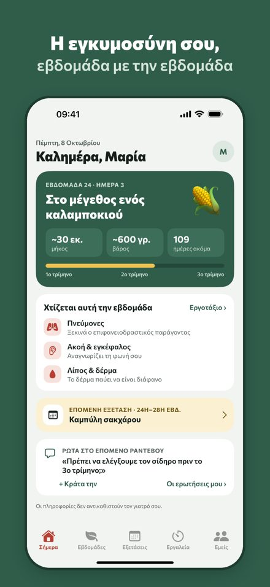
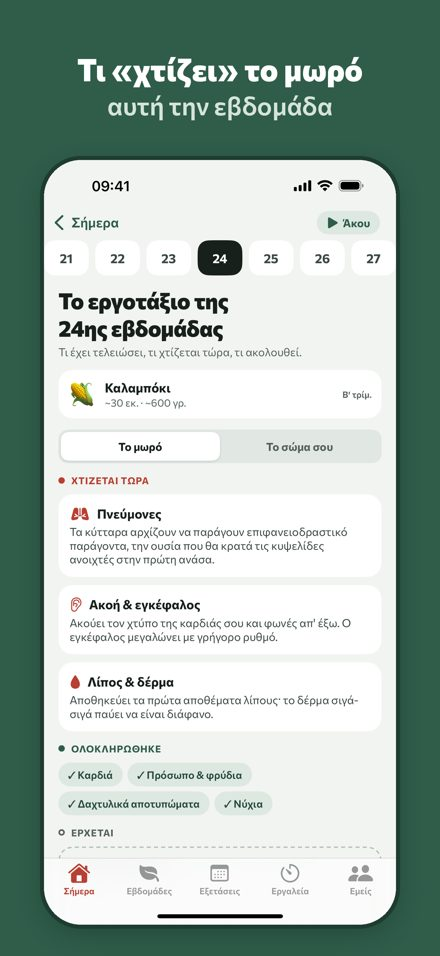
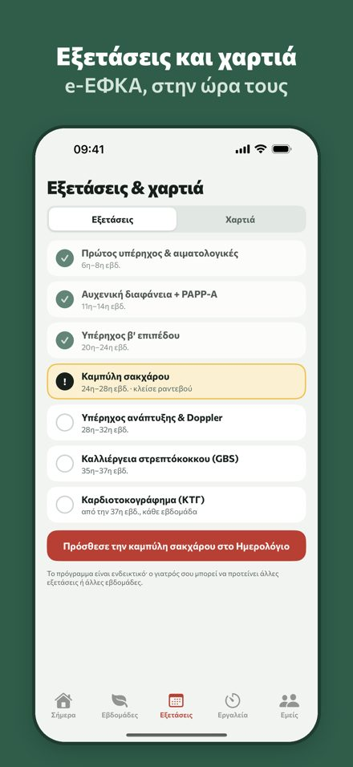
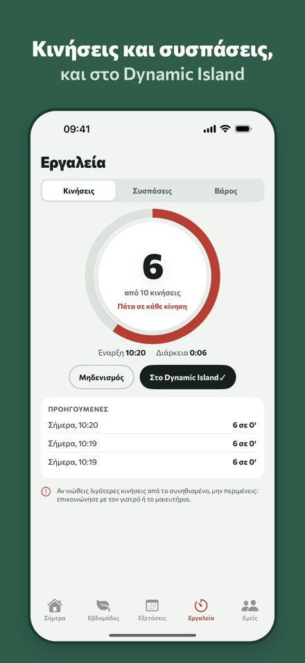
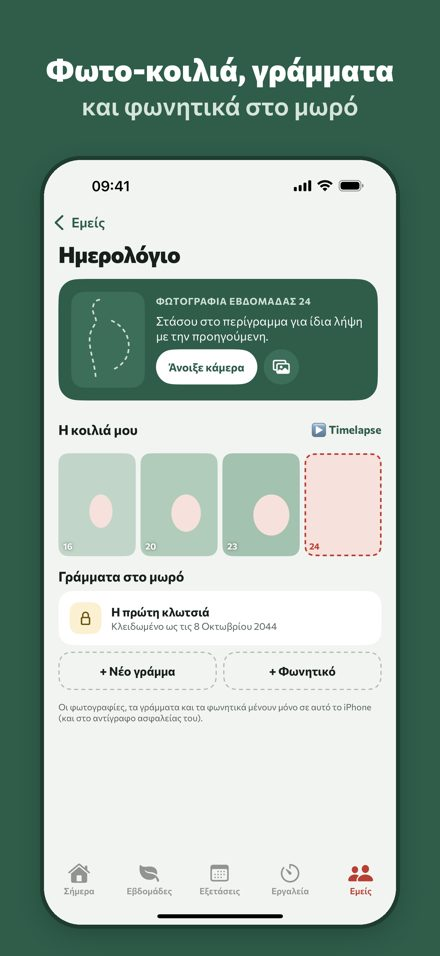
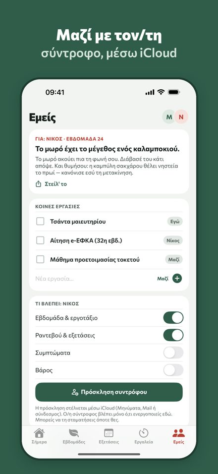

Η εγκυμοσύνη σου, εβδομάδα με την εβδομάδα.
Ένας ήρεμος, ιδιωτικός σύντροφος για iPhone, φτιαγμένος στα ελληνικά: τι «χτίζει» το μωρό κάθε εβδομάδα, ποια εξέταση έρχεται και ποια χαρτιά πρέπει να κάνεις.
Κατέβασέ το στο App Store · Δωρεάν





Τι κάνει
Το εργοτάξιο της εβδομάδας
Τι φτιάχνει το μωρό αυτή την εβδομάδα, τι έχει τελειώσει και τι ακολουθεί, με μέγεθος σε φρούτο.
40 εβδομάδες με μια ματιά
Όλη η διαδρομή σε ένα χρονολόγιο, ανά τρίμηνο.
Εξετάσεις κύησης
Το ελληνικό πρόγραμμα εξετάσεων, από τον πρώτο υπέρηχο ως το ΚΤΓ, με προσθήκη στο Ημερολόγιο.
Χαρτιά e-ΕΦΚΑ & gov.gr
Λίστες για το επίδομα μητρότητας, τη ληξιαρχική πράξη, τον ΑΜΚΑ και το επίδομα γέννησης.
Κινήσεις & συσπάσεις
Μετρητής κινήσεων και χρονόμετρο συσπάσεων, με Live Activity στην οθόνη κλειδώματος και widget.
Βάρος
Απλό ημερολόγιο βάρους με γράφημα.
Ημερολόγιο
Φωτογραφίες της κοιλιάς με timelapse, γράμματα στο μωρό που ανοίγουν σε μια ημερομηνία, φωνητικά μηνύματα.
Εμείς
Κοινές εργασίες με τον/τη σύντροφο και, αν θέλεις, κοινή χρήση μέσω iCloud.
Οδηγοί εγκυμοσύνης
Ιδιωτικότητα χωρίς αστερίσκους
Χωρίς λογαριασμό, χωρίς διαφημίσεις, χωρίς analytics και trackers. Τα δεδομένα σου μένουν στο iPhone σου. Μόνο αν ενεργοποιήσεις την κοινή χρήση με τον/τη σύντροφο, ένα μικρό σύνολο δεδομένων περνά από το δικό σου iCloud. Πολιτική απορρήτου